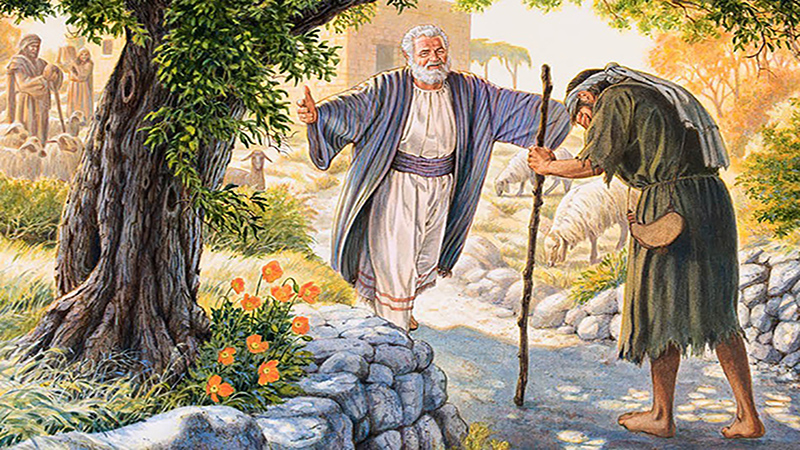
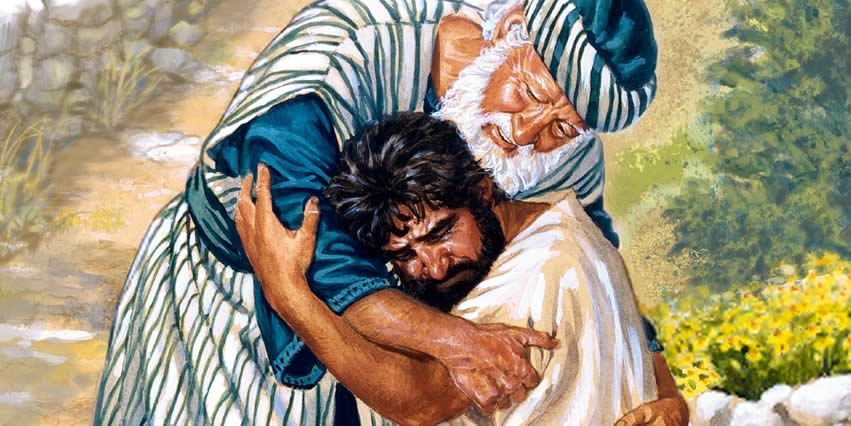

O Valor de Uma Alma
A Parábola do Filho Pródigo
Por Elza Barros Figueira
Um certo homem tinha dois filhos. O mais moço deles pediu ao pai, sua parte dos bens que lhe pertencia. Seu pai repartiu com eles a fazenda. Poucos dias depois, o filho mais novo, ajuntando tudo, partiu para uma terra longíngua. Ali, disperdiçou os seus bens, vivendo dissolutamente.

Havendo ele gastado tudo, houve naqula terra uma grande fome. Ele começou a padecer necessidades. Chegou-se a um dos cidadãos daquela terra, o qual mandou para os seus campos para apacentar porcos. Nessa situação, chegou até a desejar comer a comida dos porcos, e ninguém lhe dava nada. Tornando a si, disse em seu coração: "Quantos jornaleiros de meu pai têm abundância de pão, enquanto pereço de fome. Levantar-me-ei, e irei ter com meu pai, dir-lhe-ei: Pai, pequei contra o céu e perante ti; não sou digno de ser chamado teu filho; faze-me como um dos teus jornaleiros."
Levantando-se, foi para seu pai; e, quando ainda estava longe, seu pai o viu e, movendo-se, de íntima compaixão correu, lançando-se ao pescoço de seu filho, o beijou. E o filho lhe disse: Pai, pequei contra o céu e perante ti e já não sou digno de ser chamado teu filho. Mas o pai disse aos seus servos:Trazei depressa amelhor roupa; e vesti-lho; e pode-lhe um anel na mão, e alparcas nos pés; E trazei o bezerro cevado, e matai-o; e comamos e alegremo-nos; por que este meu filho estava morto e reviveu. tinha se perdido e foi achado. E começaram a se alegrar.

Porém, o seu filho mais velho estava no campo; e quando veio, chegou perto da casa e ouviu as músicas e a viu dança. E chamando um dos servos, perguntou o que era aquilo. E o servo lhe respondeu: Veio teu irmão; e teu pai matou um bezerro cevado, porque o recebeu são e salvo. Mas o filho mais velho se indignou e não queria entrar. E saindo o pai, instava com ele. Mas, respondendo ele disse ao pai: esque te sirvo a tantos anos sem nunca transgredir o teu mandamento, e nunca me deste um cabreto para alegrar-me com os meus amigos; vindo, porém, este teu filho, que disperdiçou os teus bens com as meretruzes, mataste um bezerro cevado. então o pai respondeu: filho, tu sempre estás comigo, e todas as minhas coisas são tuas, mas era justo nos alegrarmos e folgarmos, porque teu irão estava morto e reviveu; e tinha se perdido e se achou.'
"Assim vos digo que há alegria diante dos anjos de Deus por um pecador que se arrepende"Lc 15:10; "E, se porventura achá-la, emverdade vos digo que maior prazer tem por aquela do que pelas noventa e nove que não se desgarraram. Assim, também não é da vontade de vosso Pai, que está nos ceus, que um destes pequeninos se perca" Mt 18:13,14.